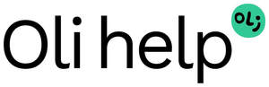

Trade Mark Journal No.2025/019 9 May 2025
UK00004162234 19 February 2025 (9,41,42,44)

- Class 9
- Education software; Health monitoring software; Educational software; Computer software concerned with children's education; Children's educational software; Downloadable publications; Electronic publications, downloadable; Publications (Electronic -), downloadable.
- Class 41
- Education services relating to computer systems; Training services relating to computer software; Technological education services; Medical education services; Educational services; Education services; Health education; Training services in the field of medical disorders and their treatment; Education services relating to the development of childrens' mental faculties; Education services relating to therapeutic treatments; Training for parents in parenting skills; Publication of multimedia material online; Electronic publication; Providing on-line publications; Publication of educational materials.
- Class 42
- Programming of educational software; Software development services; Providing scientific information in the field of medical disorders and their treatment; Medical research services; Medical research; Web site design; Hosting of digital content online.
- Class 44
- Psychological treatment; Psychological counseling; Providing psychological treatment; Psychological counselling; Psychological assessment services; Psychological care; Psychological diagnosis services; Psychological consultation; Psychological testing services; Music therapy for physical, psychological and cognitive purposes; Psychological assessment and examination services; Psychological testing; Psychological examination; Psychological testing for medical purposes; Psychological tests; Personality testing for psychological purposes; Personality testing [mental health services]; Preparation of psychological profiles for medical purposes; Psychological profiles for medical purposes (Preparation of -); Personality assessment services [mental health services]; Psychiatric services; Physical therapy services; Psychiatric consultation; Psychiatric testing; Conducting of psychological assessments and examination; Medical evaluation services for patients receiving rehabilitation for purposes of guiding treatment and assessing effectiveness; Pathological examination for medical diagnosis and treatment; Behavioural analysis for medical purposes; Medical counseling relating to stress; Medical care and analysis services relating to patient treatment; Providing mental health rehabilitation facilities; Physical therapy; Therapy (Physical -); Medical counselling; Physical rehabilitation; Medical counseling; Medical analysis for the diagnosis and treatment of persons; Medical testing services relating to the diagnosis and treatment of disease; Medical analysis services relating to the treatment of patients; Medical health assessment services; Psychotherapy services; Medical counselling services; Medical counseling services; Medical treatment services; Providing mental rehabilitation facilities; Mental health screening services; Preparation of psychological reports; Physiotherapy [physical therapy]; Medical evaluation services; Psychotherapy; Psychologist (Services of a -); Health counseling; Medical information; Medical information services; Providing medical information; Provision of medical information; Medical information (Provision of -); Medical information retrieval services; Mental health services; Health care; Public health counseling; Health centers; Health screening; Health clinic services; Health assessment services; Health consultancy; Medical care; Medical services; Medical examinations; ADHD screening services; Attention Deficit Hyperactivity Disorder screening services; Diagnosis of visual processing disorders; Attention Deficit Disorder screening services; Medical advice for persons with disabilities; Providing medical information from a web site.
OLI HELP SRL